Detailný manuál a vizuálny sprievodca pre zákazníkov. V tomto návode nájdete presný popis všetkých 16 klientskych modulov, HD screenshoty rozhrania vo vysokom rozlíšení a postupy krok za krokom pre rezervácie, permanentky, vouchery a Kreslo Hunter.
16Modulov a kapitol
18HD Screenshotov systému
100%Overené v reálnom účte
< 60 sPriemerný čas rezervácie
00
Bočné Navigačné Menu Zákazníka
moj_profil.php
menu_openBočné Menu & Navigácia
Klientske rozhranie Rezervos využíva moderné dynamické bočné menu. Na obrazovkách zostáva v kompaktnej šírke 64 pixelov s ikonami pre maximálny priestor na obsah. Akonáhle na lištu prejdete kurzorom myši (hover) alebo kliknete, menu sa plynule roztiahne na plnú šírku 250 pixelov a odhalí slovenské názvy a štruktúru všetkých klientskych modulov.
Celkový pohľad na systém s roztiahnutým menuŠírka 250 px
zoom_inKliknite pre zväčšenie celkového pohľadu
Detail všetkých položiek menuZákaznícke moduly
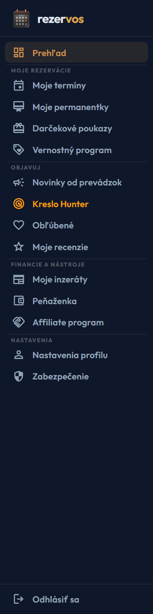
zoom_inKliknite pre zväčšenie detailu menu
dashboard1. Denný prehľad & Termíny
Položky: Prehľad (uvítací panel a odpočítavanie najbližšej návštevy) a Moje termíny (zoznam nadchádzajúcich aj minulých rezervácií).
card_membership2. Predplatné & Benefity
Položky: Moje permanentky (digitálne karty so zostatkom vstupov), Darčekové poukazy a Vernostný program (body a pečiatky).
storefront3. Objavovanie & Salóny
Položky: Novinky od prevádzok, unikátny lovec termínov Kreslo Hunter, Obľúbené salóny a Moje recenzie.
payments4. Financie & Nástroje
Položky: Moje inzeráty (bazar a dopyty), Peňaženka (dobíjanie kreditu na platby) a Affiliate program (odporúčacie provízie).
settings5. Účet & Zabezpečenie
Položky: Nastavenia profilu (kontakty a VIP odznak), Zabezpečenie (2FA autentifikácia a heslo) a Odhlásiť sa.
lightbulb
Tip pre ovládanie menu: Na počítači stačí prejsť kurzorom na ľavý okraj a menu sa okamžite vysunie. Na mobiloch a tabletoch použite tlačidlo v ľavom hornom rohu hlavičky – menu sa otvorí ako vysúvací drawer s tmavým backdropom.
01
Prehľad Zákazníka (Klientsky Dashboard)
moj_profil.php#dashboard
dashboardTermíny & Rezervácie
Po prihlásení do klientskej zóny vás privíta prehľadná uvítacia obrazovka s vaším menom a profilovým statusom. Hlavným prvkom je informačný panel s vaším najbližším plánovaným termínom, vďaka čomu presne viete, do akého salónu a v aký čas máte prísť.
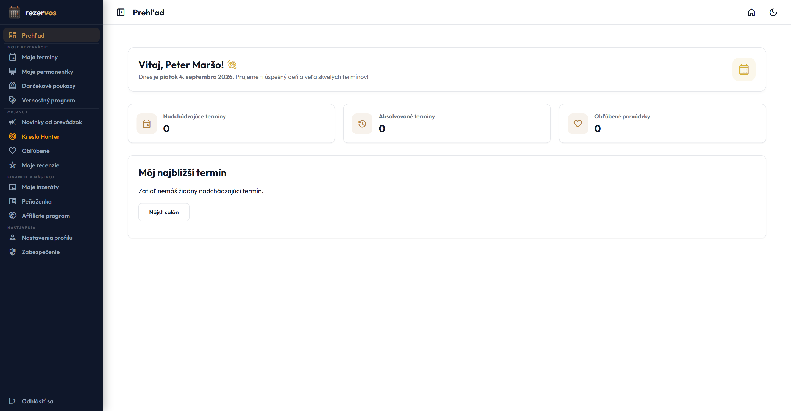
zoom_inKliknite pre zväčšenie
scheduleNajbližší termín
Zobrazuje presný dátum, čas, názov salónu, objednanú službu, priradeného pracovníka a odkaz na stiahnutie do kalendára.
savingsStav peňaženky & bodov
Okamžitý zostatok vášho predplateného kreditu a nazbierané vernostné body z vašich doterajších návštev.
touch_appRýchle odkazy
Tlačidlá pre okamžitý skok do katalógu salónov, dobitie kreditu alebo správu osobných údajov a hesla.
checklistČo nájdete na paneli najbližšieho termínu:
1
Názov a adresa salónu: Kliknutím na adresu sa otvorí Google Maps s navigáciou priamo pred dvere prevádzky.
2
Objednané procedúry: Presný zoznam položiek, celková dĺžka trvania v minútach a konečná cena.
3
Možnosť zmeny či zrušenia: Ak vám termín nevyhovuje, môžete ho zrušiť priamo z dashboardu v súlade so storno podmienkami salónu.
02
Moje Termíny & História Rezervácií
moj_profil.php#bookings
event_availableTermíny & Rezervácie
V sekcii Moje termíny máte 100% kontrolu nad svojím harmonogramom návštev. Nemusíte hľadať potvrdzujúce e-maily ani SMS správy — všetky rezervácie sú usporiadané chronologicky s detailnými údajmi o salóne, cene a poskytovateľovi služby.
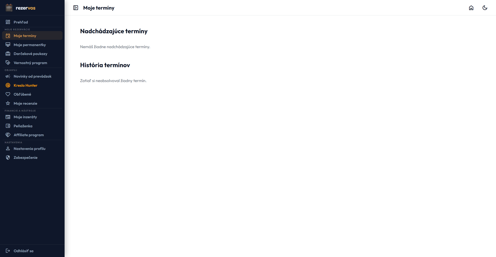
zoom_inKliknite pre zväčšenie
event_upcomingNadchádzajúce rezervácie
Zoznam termínov, ktoré vás ešte len čakajú. Vidíte status (Potvrdená / Čaká na potvrdenie), presný čas a personál. Môžete si termín stiahnuť do kalendára (.ics) alebo požiadať o storno.
history_eduHistória návštev & Preobjednanie
Archív všetkých vašich minulých procedúr. Ak ste boli spokojní, tlačidlom „Objednať znova“ si rezervujete rovnakú službu na 1 kliknutie bez nového vyhľadávania.
info
Storno podmienky salónov: Každá prevádzka si nastavuje vlastnú lehotu bezplatného storna (napríklad najneskôr 24 hodín vopred). Tlačidlo na zrušenie termínu je aktívne v závislosti od pravidiel konkrétneho salónu.
03
Moje Permanentky & Členstvá
moj_profil.php#memberships
loyaltyPermanentky & Poukazy
Už so sebou nemusíte nosiť papierové kartičky ani pečiatkové preukazy. Všetky zakúpené permanentky (napríklad 10 vstupov na strih, 5 masáží alebo mesačné členstvo) máte bezpečne uložené vo svojom profile s automatickým odpočítavaním čerpania.
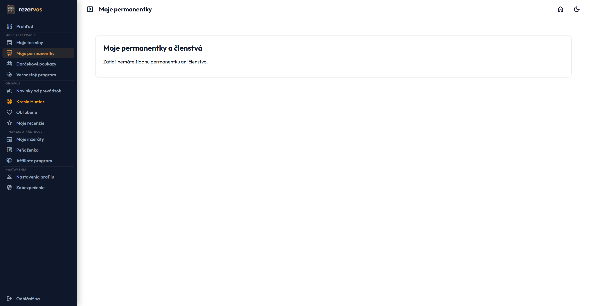
zoom_inKliknite pre zväčšenie
pinKód a identifikátor
Každá permanentka má jedinečný kód, ktorý stačí nahlásiť personálu, alebo si ho systém automaticky priradí pri online rezervácii.
data_usageZostatok vstupov
Vizuálny ukazovateľ (napr. 7 z 10 vstupov voľných). Presne viete, koľko návštev vám ešte zostáva.
event_busyDátum expirácie
Zreteľné zobrazenie platnosti permanentky (napr. platná do 31.12.2026), aby vám žiadny predplatený vstup neprepadol.
checklistAko uplatniť permanentku pri rezervácii:
1
Výber služby: Pri objednávaní v salóne, kde máte zakúpenú permanentku, si vyberte príslušnú procedúru.
2
Automatické uplatnenie: Systém v kroku platby automaticky rozpozná vašu aktívnu kartu a cenu nastaví na 0 €.
3
Odpis vstupu: Po absolvovaní termínu personál odpočíta 1 vstup a zostatok sa ihneď aktualizuje vo vašom profile.
04
Darčekové Poukazy & Vouchery
moj_profil.php#giftvouchers
featured_seasonal_and_giftsPermanentky & Poukazy
Dostali ste od blízkych darčekový poukaz na návštevu salónu, alebo ste si sami zakúpili voucher? V tejto sekcii nájdete všetky aktívne poukazy, ich nominálnu hodnotu, aktuálny nevyčerpaný zostatok a dátum platnosti.
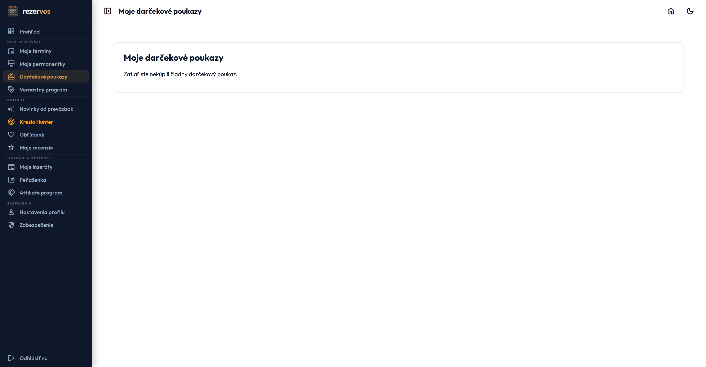
zoom_inKliknite pre zväčšenie
receipt_longPostupné čerpanie kreditu
Pokiaľ máte 100 € poukaz a vaša procedúra stála 40 €, zvyšných 60 € vám zostáva k dispozícii na vašu ďalšiu návštevu.
picture_as_pdfTlač a stiahnutie v PDF
Poukazy môžete jedným kliknutím stiahnuť v reprezentatívnom grafickom PDF formáte, vytlačiť alebo poslať obdarovanému e-mailom.
redeem
Ako uplatniť kód poukazu: Pri dokončovaní online rezervácie na webe Rezervos vložte alfanumerický kód do poľa „Mám darčekový poukaz / zľavový kód“. Hodnota sa okamžite odpočíta z konečnej sumy objednávky.
05
Vernostný Program & Klientske Odmeny
moj_profil.php#loyalty
starsVernostný program & Zľavy
Rezervos odmeňuje vašu vernosť. Za každú absolvovanú návštevu zapojených prevádzok automaticky získavate vernostné body alebo digitálne pečiatky, ktoré môžete následne premeniť na zľavy, darčekové procedúry či špeciálne balíčky.
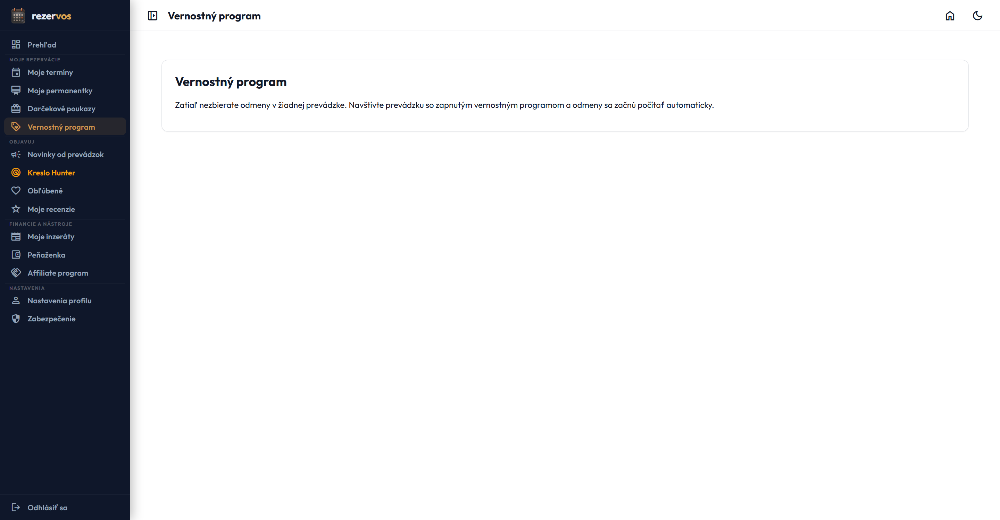
zoom_inKliknite pre zväčšenie
tollBodové konto podľa salónov
Máte prehľadný rozpis bodov pre každú navštevovanú prevádzku zvlášť. Vidíte, koľko bodov máte a koľko chýba k ďalšej odmene.
workspace_premiumKatalóg dostupných benefitov
Zoznam odmien pripravených na výmenu (napríklad: 50 bodov = 10% zľava, 100 bodov = strih zdarma, darčekové vlasové sérum).
auto_awesomeAutomatické pripísanie
Nemusíte si pýtať pečiatku na pokladni. Akonáhle salón označí vašu rezerváciu ako vybavenú, body sa na účet pripíšu okamžite.
06
Novinky & Akcie Od Prevádzok
moj_profil.php#newsletters
campaignVernostný program & Zľavy
V tejto sekcii nájdete personalizovaný informačný kanál od salónov, ktoré ste v minulosti navštívili alebo si ich uložili medzi obľúbené. Majitelia salónov tu publikujú špeciálne novinky, limitované zľavové akcie či informácie o nových členoch tímu.
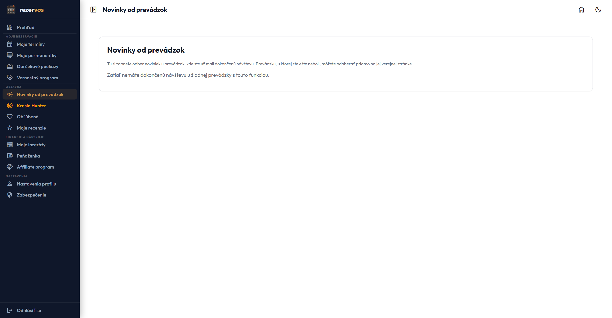
zoom_inKliknite pre zväčšenie
boltPriama rezervácia z akcie
Pokiaľ salón vyhlási sezónnu akciu, pod správou nájdete tlačidlo na priamu rezerváciu s už aplikovanou akčnou cenou.
event_busyDovolenky a sanitárne dni
V predstihu viete, kedy má váš obľúbený personál dovolenku, aby ste si stihli rezervovať termín včas pred ich odchodom.
07
Kreslo Hunter (Automatický Lovec Termínov)
moj_profil.php#hunter
notifications_activeVernostný program & Zľavy
Kreslo Hunter je prémiová unikátna funkcia platformy Rezervos. Ak sú vaše obľúbené salóny plne vybookované na týždne dopredu, Hunter za vás nepretržite stráži kalendáre. Hneď ako niekto iný zruší svoju rezerváciu na poslednú chvíľu, Hunter uvoľnené kreslo zachytí a pošle vám okamžitú ponuku.
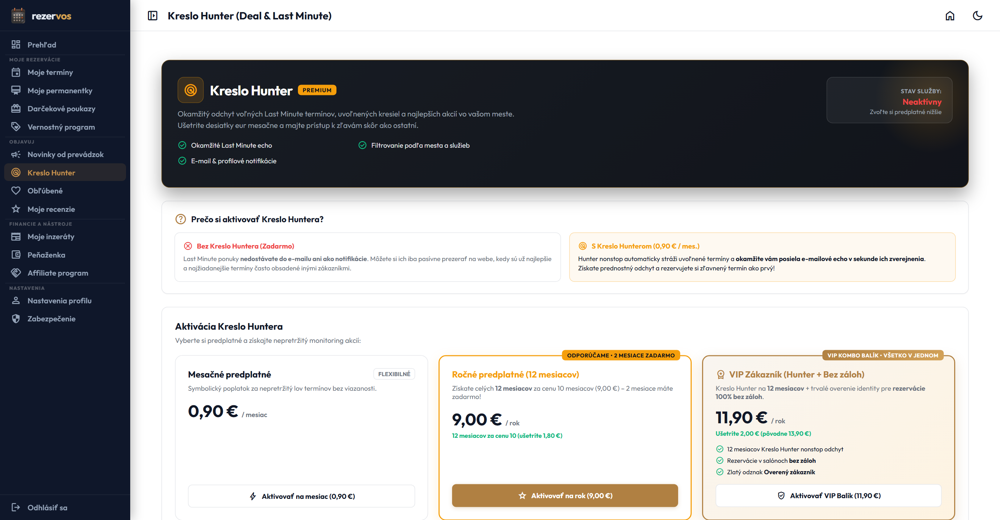
zoom_inKliknite pre zväčšenie
my_locationNastavenie revíru
Zvoľte si mesto alebo oblasť, preferované služby (napr. Dámsky strih, Barber, Masáže) a maximálnu vzdialenosť.
percentLast-minute zľavy
Mnoho salónov ponúka uvoľnené termíny v ten istý deň so zľavou 20% až 50%, aby nezostali s prázdnym kreslom.
timerBlesková rezervácia
Ulovený termín si môžete zarezervovať na 1 kliknutie z notifikácie skôr, ako ho stihne obsadiť niekto iný.
checklistAko aktivovať svojho Lovca termínov:
1
Zadajte kritériá: Vyberte kategóriu služby, mesto a dni v týždni, kedy máte voľný čas.
2
Zapnite notifikácie: Povoľte odosielanie SMS alebo e-mailových upozornení na ulovené termíny.
3
Potvrďte termín: Po doručení hlásenia o voľnom kresle stačí kliknúť a termín je váš.
08
Obľúbené Salóny (Môj Zoznam Prevádzok)
moj_profil.php#favorites
favoriteSalóny & Recenzie
Nemusíte si pamätať presný názov kaderníctva, kozmetického štúdia či masážneho salónu. Všetky prevádzky, ktoré si označíte srdiečkom, sa prehľadne zhromažďujú na tejto karte. Jedným kliknutím sa dostanete k ich cenníku, personálu a voľným termínom.
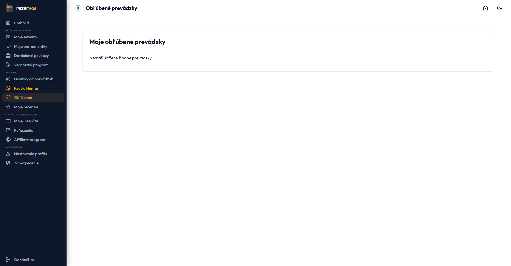
zoom_inKliknite pre zväčšenie
bookmarkPriamy prístup
Preskočte katalógové vyhľadávanie. Otvorte obľúbený salón a ihneď si vyberte svojho overeného majstra a voľný čas.
callKontaktné informácie
Okamžitý prístup k telefónnemu číslu salónu, presnej adrese, otváracím hodinám a odkazom na ich sociálne siete.
delete_outlineJednoduchá správa
Ak už do salónu neplánujete chodiť, opätovným kliknutím na srdiečko ho kedykoľvek zo zoznamu odstránite.
09
Moje Recenzie & Hodnotenia
moj_profil.php#reviews
rate_reviewSalóny & Recenzie
Na platforme Rezervos môžu recenzie písať výhradne overení zákazníci, ktorí procedúru reálne absolvovali a zaplatili. V tejto sekcii máte pohromade všetky svoje udelené hviezdičkové hodnotenia, slovné komentáre aj oficiálne odpovede salónov.
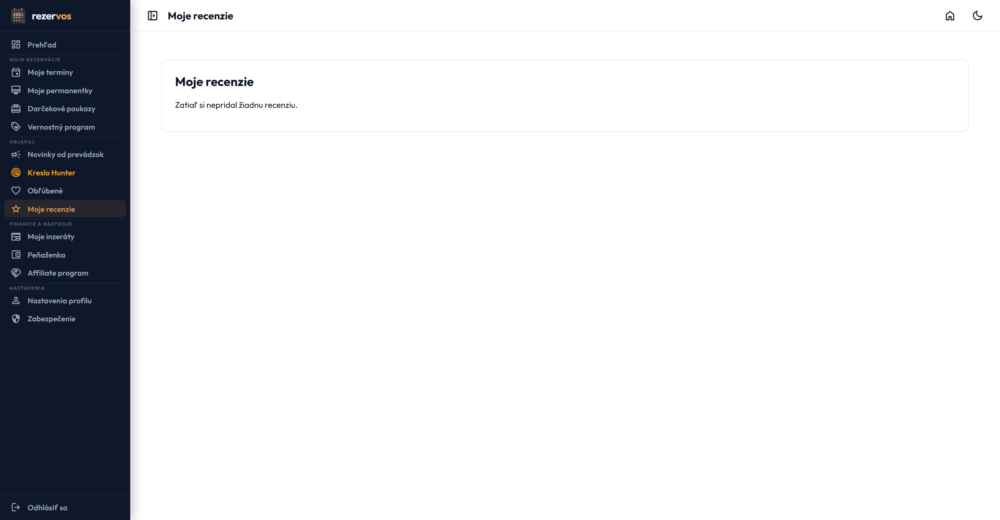
zoom_inKliknite pre zväčšenie
edit_noteÚprava spätnej väzby
Ak sa po čase rozhodnete svoje hodnotenie spresniť alebo doplniť novú skúsenosť, môžete recenziu kedykoľvek upraviť.
replyOdpovede salónov
Máte možnosť sledovať oficiálne odpovede a poďakovania od majiteľov prevádzok na vašu zanechanú spätnú väzbu.
10
Moje Inzeráty (Klientska Inzercia)
moj_profil-inzercia.php
storeFinancie, Inzercia & Provízie
Rezervos prepája nielen zákazníkov so salónmi, ale vytvára celú komunitu. V sekcii Moje inzeráty môžete pridávať vlastné inzeráty — či už predávate profesionálne kozmetické prístroje, ponúkate prenájom kresla, alebo hľadáte spoľahlivú vizážistku na svadobný termín.
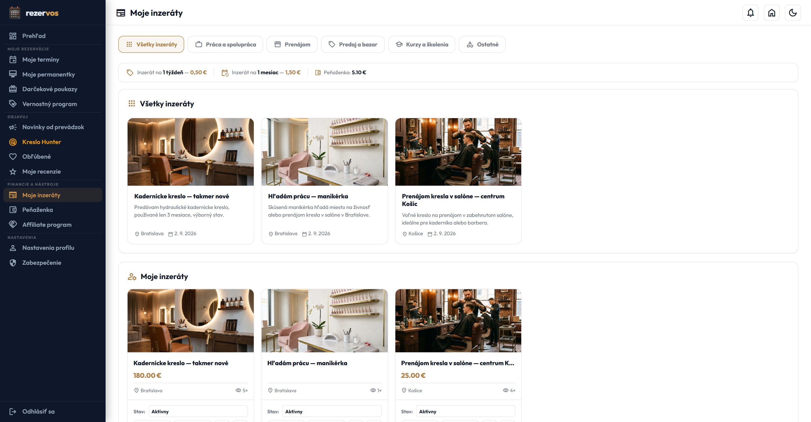
zoom_inKliknite pre zväčšenie
add_photo_alternateFotogaléria & Lokalita
K inzerátu môžete nahrať viacero fotografií, detailný popis, predajnú cenu a lokalitu pôsobenia.
visibilityPočítadlo zobrazení
Presná štatistika, koľko návštevníkov portálu Rezervos si váš inzerát prezrelo a prejavilo záujem.
toggle_onAktivácia a archivácia
Inzerát môžete kedykoľvek dočasne pozastaviť, označiť za predaný alebo úplne vymazať z databázy.
S klientskou peňaženkou Rezervos nemusíte pri návšteve salónu riešiť hotovosť ani vyťahovať platobnú kartu pri pokladni. Dobite si kredit vopred a plaťte za služby bezpečne, rýchlo a bezkontaktne priamo z aplikácie.
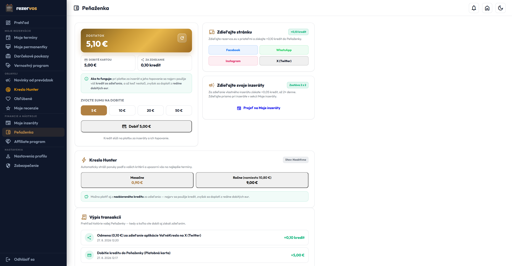
zoom_inKliknite pre zväčšenie
add_cardOkamžité dobitie kreditu
Zvoľte si sumu (napr. 20 €, 50 €, 100 €) a zaplaťte online. Kredit je pripísaný do niekoľkých sekúnd.
receiptHistória transakcií
Prehľadný výpis každého pohybu: dobitia, platby za rezervácie, pripísané bonusy a vrátenia peňazí pri storne.
lockBanková bezpečnosť
Všetky platobné operácie prebiehajú cez šifrovanú platobnú bránu podľa bankových bezpečnostných štandardov PCI-DSS.
redeem
Kreditné bonusy: Niektoré salóny ponúkajú bonusový kredit k dobitiu (napríklad dobite 50 € a získajte kredit 55 € na využitie v salóne).
12
Affiliate Program (Odporučte a Získajte Provízie)
affiliate.php
group_addFinancie, Inzercia & Provízie
Páči sa vám systém Rezervos a poznáte kaderníčku, barbera, maséra alebo majiteľa kozmetického salónu, ktorý stále používa papierový diár? Zdieľajte s ním svoj osobný odporúčací odkaz. Keď si prevádzka aktivuje balík na Rezervos, vy získate férovú províziu alebo kredit na služby zadarmo.
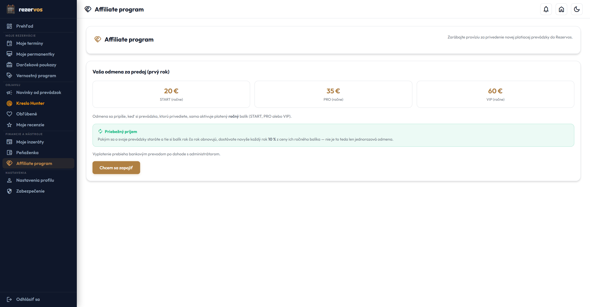
zoom_inKliknite pre zväčšenie
linkVáš unikátny link
Automaticky vygenerovaný odkaz s vaším ID. Môžete ho skopírovať a poslať cez WhatsApp, Messenger alebo sociálne siete.
query_statsTransparentné štatistiky
Vidíte presný počet návštevníkov, ktorí cez váš odkaz prišli, koľko prevádzok sa zaregistrovalo a koľko platí.
monetization_onVyplácanie odmien
Získané provízie si môžete nechať poslať na bankový účet alebo ich premeniť na kredit do peňaženky pre bezplatné návštevy.
13
Nastavenia Profilu & Klientsky VIP Odznak
moj_profil.php#settings
badgeProfil & Bezpečnosť
V nastaveniach profilu máte pod kontrolou svoje identifikačné a kontaktné údaje. Správne vyplnené telefónne číslo je kľúčové pre bezplatné SMS pripomienky pred termínom. Zároveň tu vidíte svoj VIP status — salóny prioritne schvaľujú rezervácie klientom s vysokým skóre spoľahlivosti.
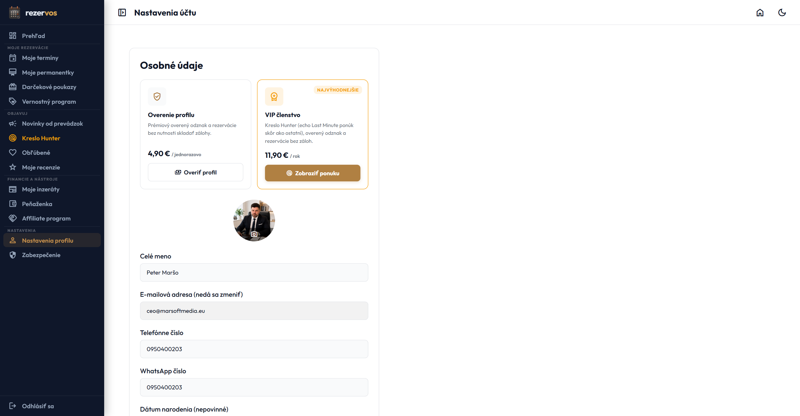
zoom_inKliknite pre zväčšenie
phone_iphoneTelefónne číslo & SMS pripomienky
Zadajte telefónne číslo v tvare +421..., aby vám 24 hodín a 2 hodiny pred procedúrou prišla bezplatná SMS pripomienka.
workspace_premiumVIP odznak spoľahlivosti
Klienti, ktorí na termíny chodia načas a nerušia ich bez ospravedlnenia, získavajú status VIP s prioritným prístupom.
notifications_offPredvoľby komunikácie
Môžete si nastaviť, aké typy správ chcete dostávať — potvrdenia, pripomienky, bulletiny salónov či systémové novinky.
Bezpečnosť vašich osobných údajov a peňaženky je prvoradá. V sekcii Zabezpečenie si môžete kedykoľvek aktualizovať prihlasovacie heslo a aktivovať dvojfaktorovú autentifikáciu (2FA), ktorá zabráni neoprávnenému prístupu k vášmu účtu aj v prípade prezradenia hesla.
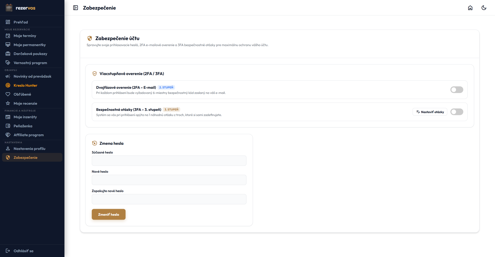
zoom_inKliknite pre zväčšenie
passwordZmena prihlasovacieho hesla
Formulár s overením aktuálneho hesla a indikátorom sily nového hesla. Odporúčame kombináciu písmen, čísel a symbolov.
phonelink_lockDvojfaktorové overenie (2FA)
Prepojte si účet s mobilnou aplikáciou (Google Authenticator / Authy). Pri prihlásení budete vyzvaný na 6-miestny kód.
warning
Záchranné kódy: Pri aktivácii 2FA si nezabudnite bezpečne uložiť záchranné záložné kódy pre prípad straty alebo výmeny telefónu.
15
Ako Nájsť Salón & Rezervovať Termín
prevadzky.php
travel_exploreSalóny & Recenzie
Objednať sa na strihanie, masáž či nechtový dizajn nebolo nikdy jednoduchšie. Nemusíte čakať na otváracie hodiny salónu ani telefonovať počas pracovného zhonu. Rezervos vám umožňuje prezrieť si voľné termíny v reálnom čase kedykoľvek, hoci aj o polnoci z pohodlia domova.
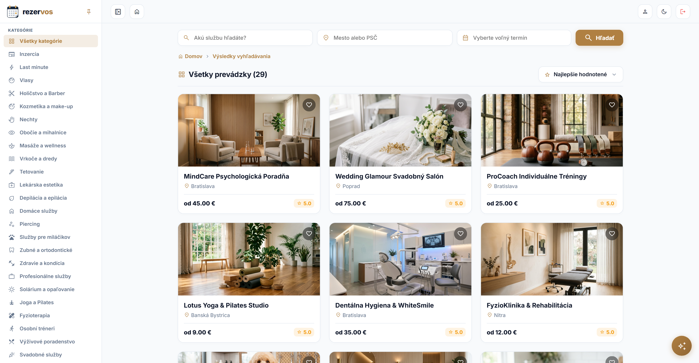
zoom_inKliknite pre zväčšenie
checklist4 jednoduché kroky k vášmu termínu:
1
Vyhľadanie a výber salónu: Na stránke prevádzok zadajte vaše mesto alebo kategóriu (Kaderníctvo, Barber, Kozmetika, Masáže...). Pozrite si hodnotenia ostatných zákazníkov, fotky interiéru a cenník.
2
Voľba služby a pracovníka: Kliknite na tlačidlo „Rezervovať“. Zvoľte požadovanú službu a konkrétneho zamestnanca, alebo nechajte možnosť „Ktokoľvek voľný“ pre najrýchlejší termín.
3
Výber dňa a času: V interaktívnom kalendári sa vám rozbalia iba skutočne voľné časové sloty. Vyberte si čas, ktorý vám presne vyhovuje.
4
Potvrdenie rezervácie: Skontrolujte zhrnutie, zadajte voucher alebo permanentku (ak máte) a kliknite na „Potvrdiť rezerváciu“. Na e-mail a SMS vám okamžite dorazí potvrdenie so všetkými podrobnosťami.
check_circle
Automatická synchronizácia s mobilom: V potvrdzujúcom e-maili aj v klientskom profile máte k dispozícii tlačidlo „Pridať do kalendára“, ktoré termín okamžite vloží do vášho Google Kalendára alebo Apple Kalendára v iPhone s automatickou pripomienkou.